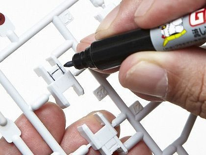
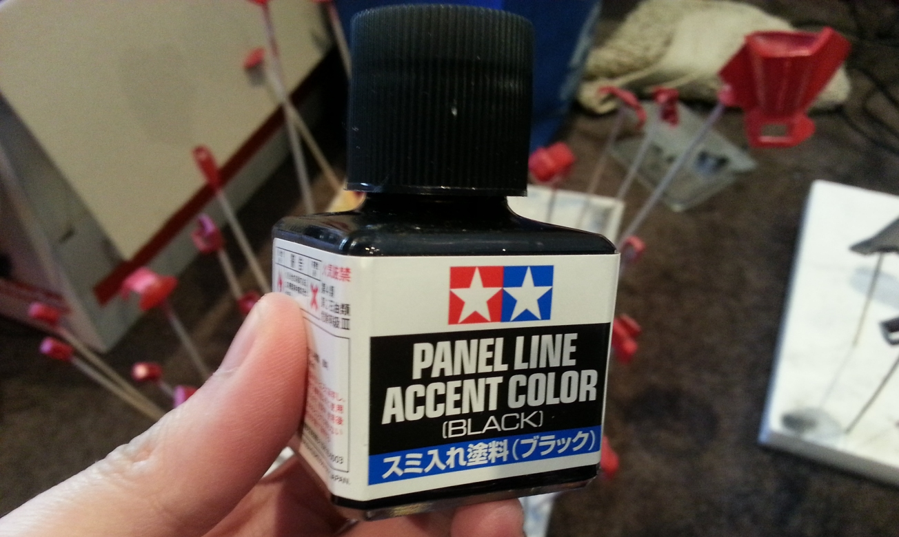
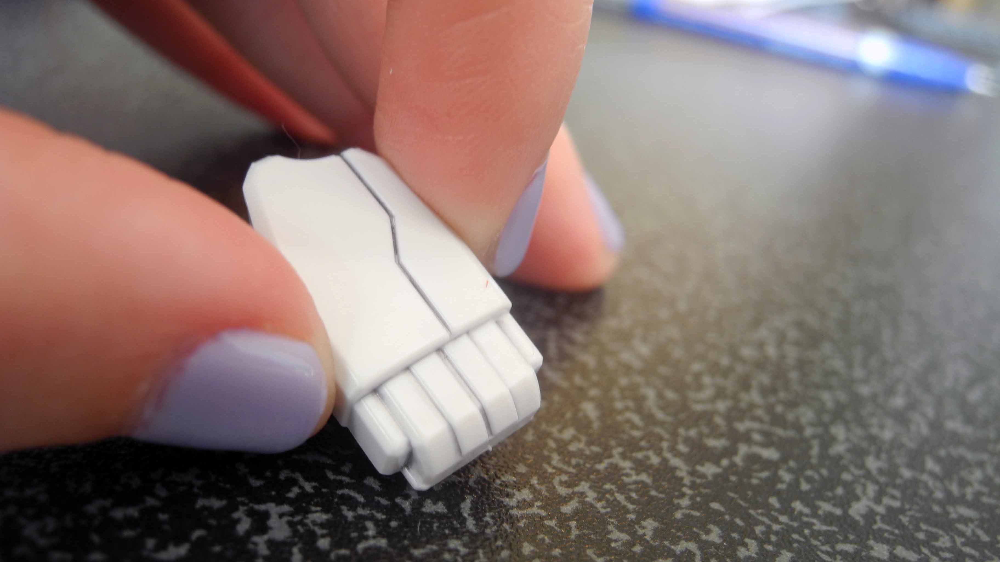

Panel Lining
Panel lining is the process of marking lines on your model kit with paint or a marker to enhance the contrast of the model
Markers
Enamel Liner
Gundam Markers are an easy and user friendly way to start panel lining, they come in 2 types, fine tip markers and pour type markers
Enamel Panel Liners are a bit trickier to use but can create beautiful results and is the reccommended technique for experienced builders


Gundam Markers are fairly plug and play. In the case of the fine tip markers simply uncap and start drawing in the lines on your pieces. Pour type markers need to be shaken and then the seal needs to be broken the first time. Once this is donepaint will flow from this marker when its pressed down, use it to gently pour the paintinto the grooves.
Enamel Panel Liners need a fair bit more work, Enamel paint can eat away at the plastic used for model kits. This is why its reccommended to buy a can of gloss topcoat and spray your pieces with it, more details on that can be found on the touch-up guidehere.
Once you've filled the grooves, use a cotton swab to wipe any excess away and you're all done!
Panel line accent colours have a handy applicator in the bottle cap, use that and gently dab some at the start of the groove like in the image below, it should run accross the length of the groove by itself



Afterwards just clean up any excess using an enamel thinner and a q-tip, it is reccommended that you don't apply this to the bare plastic and topcoat the piece first. Enamel paint will take at least a day to dry.